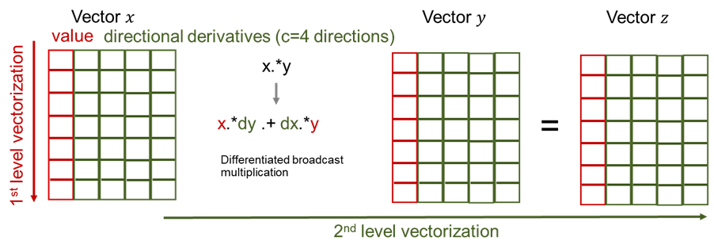

AutoDiff
Overview
Given a set of equations F(x) = 0, the Newton-Raphson algorithm for solving nonlinear equations (see below) requires the Jacobian J = jacobian(x) of F. At each iteration a new step dx is computed by solving a linear system. In our case J is sparse and indefinite.
go = true
while(go)
dx .= jacobian(x)\f(x)
x .= x .- dx
go = norm(f(x)) < tol ? true : false
endThere are two modes of differentiation called forward/tangent or reverse/adjoint. The latter is known in machine learning as backpropagation. The forward mode generates Jacobian-vector product code tgt(x,d) = J(x) * d, while the adjoint mode generates code for the transposed Jacobian-vector product adj(x,y) = (J(x)'*y). We recommend the book Evaluating derivatives: principles and techniques of algorithmic differentiation by Griewank and Walther[1] for a more in-depth introduction to automatic differentiation. The computational complexity of both models favors the adjoint mode if the number of outputs of F is much smaller than the number of inputs size(x) >> size(F), like for example the loss functions in machine learning. However, in our case F is a multivariate vector function from $\mathbb{R}^n$ to $\mathbb{R}^n$, where $n$ is the number of buses.

To avoid a complexity of $\mathcal{O}(n) \cdot cost(F)$ by letting the tangent mode run over all Cartesian basis vectors of $\mathbb{R}^n$, we apply the technique of Jacobian coloring to compress the sparse Jacobian J. Running the tangent mode, it allows to compute columns of the Jacobian concurrently, by combining independent columns in one Jacobian-vector evaluation (see in figure above). For sparsity detection we rely on the greedy algorithm implemented by SparseDiffTools.jl.
Given the sparsity pattern, the forward model is applied through the package ForwardDiff.jl. Given the number of Jacobian colors $c$ we can build our dual type t1s with c directions:
t1s{N} = ForwardDiff.Dual{Nothing,Float64, N} where N}Note that a second-order type t2s can be created naturally by applying the same logic to t1s:
t2s{M,N} = ForwardDiff.Dual{Nothing,t1s{N}, M} where M, N}Finally, this dual type can be ported to both vector types Vector and CuVector:
VT = Vector{Float64}
VT = Vector{t1s{N}}}
VT = CuVector{t1s{N}}}Setting VT to either of the three types allows us to instantiate code that has been written using the broadcast operator .
x .= a .* bor accessed in kernels written for KernelAbstractions.jl like for example the power flow equations (here in polar form):
@kernel function residual_kernel!(F, v_m, v_a,
ybus_re_nzval, ybus_re_colptr, ybus_re_rowval,
ybus_im_nzval, ybus_im_colptr, ybus_im_rowval,
pinj, qinj, pv, pq, nbus)
npv = size(pv, 1)
npq = size(pq, 1)
i = @index(Global, Linear)
# REAL PV: 1:npv
# REAL PQ: (npv+1:npv+npq)
# IMAG PQ: (npv+npq+1:npv+2npq)
fr = (i <= npv) ? pv[i] : pq[i - npv]
F[i] -= pinj[fr]
if i > npv
F[i + npq] -= qinj[fr]
end
@inbounds for c in ybus_re_colptr[fr]:ybus_re_colptr[fr+1]-1
to = ybus_re_rowval[c]
aij = v_a[fr] - v_a[to]
coef_cos = v_m[fr]*v_m[to]*ybus_re_nzval[c]
coef_sin = v_m[fr]*v_m[to]*ybus_im_nzval[c]
cos_val = cos(aij)
sin_val = sin(aij)
F[i] += coef_cos * cos_val + coef_sin * sin_val
if i > npv
F[npq + i] += coef_cos * sin_val - coef_sin * cos_val
end
end
endThese two abstractions are a powerful tool that allow us to implement the forward mode in vectorized form where the number of directions or tangent components of a tangent variable are the number of Jacobian colors. We illustrate this in the figure below with a point-wise vector product x .* y

This natural way of computing the compressed Jacobian yields a very high performing code that is portable to any vector architecture, given that a similar package like CUDA.jl exists. We note that similar packages for the Intel Compute Engine and AMD ROCm are in development called oneAPI.jl and AMDGPU.jl, respectively. We expect our package to be portable to AMD and Intel GPUs in the future.
- 1Griewank, Andreas, and Andrea Walther. Evaluating derivatives: principles and techniques of algorithmic differentiation. Society for Industrial and Applied Mathematics, 2008.